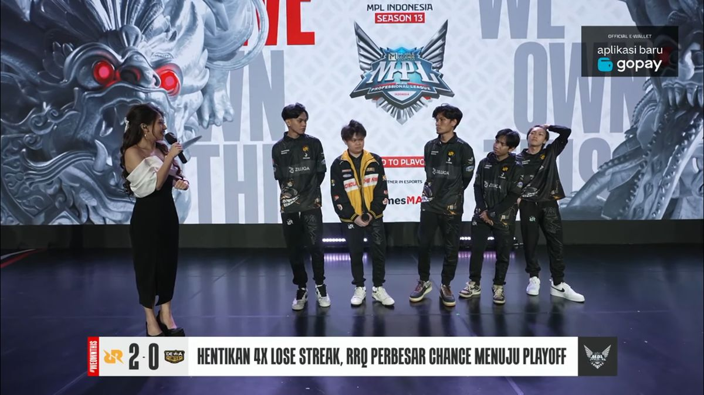

RRQ Hoshi Tumbangkan Dewa United, Lanjutkan Asa Playoff
Pada pertandingan di Week 9 Day 1 Match Kedua, RRQ Hoshi berhasil menumbangkan Dewa United Esports dengan skor telak 2-0 pada gelaran MPL Indonesia Season 13 malam ini, Jumat (17/05/24). RRQ membutuhkan kemenangan sempurna untuk mengamankan tiket ke babak playoff. Sementara Dewa sudah dipastikan tidak lolos playoff, tetapi mereka tetap akan memberikan perlawanan terbaiknya. Dalam match RRQ Hoshi vs Dewa United Esports kali ini, pertandingan berjalan menegangkan. Dengan membawakan roster terbainya yaitu 1rrad, VYN, Clayyy, Skylar, dan Donn, RRQ masih bisa berjuang menuju playoff dengan syarat mereka harus menumbangkan Alter Ego Esports pada match Besok. Dilansir dari Dunia Games pada match di game 1, RRQ sudah tancap gas dengan membungkus kemenangan dari Dewa. Skylar masih menjadi penggendong andal untuk tim Raja dari Segala Raja. Skylar sukses menjadi MVP untuk kemenangan RRQ di game 1. Di game 2, RRQ berhasil menggandakan kemenangan. Kemenangan RRQ dengan skor akhir 2-0 dari Dewa United ini membuat Skylar dkk. masih memiliki harapan untuk lolos ke babak playoff. Sebab RRQ harus bisa membungkus kemenangan penuh dari dua match tersisa. Apakah RRQ masih bisa lolos playoff di musim ini? Tunggu jawabannya di match RRQ selanjutnya. Para penggemar Esports di seluruh Indonesia pasti menantikan pertandingan-pertandingan selanjutnya dalam MPL ID Season 13, karena setiap pertarungan selalu menjanjikan aksi seru dan ketegangan yang mendebarkan.